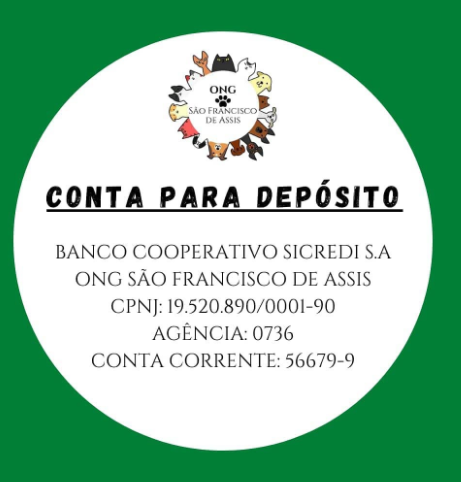

Apoie a causa
Prezados associados da ONG e população em geral, a nossa entidade agora tem uma conta corrente para receber as contribuições períodicas de seus associados, bem como quaisquer doações da comunidade.
Pedimos a sua ajuda para que consigamos continuar o nosso trabalho em prol dos nossos animais. É muito importante salientar que todos os proventos recebidos são destinados ao pagamento de contas no veterinário, emergências, entre outros, e que há prestação de contas de cada centavo recebido.
Somos uma associação transparente, onde nosso único objetivo é promover o bem-estar animal em nossa cidade.
Faça parte dessa corrente do bem! Associe-se! Doe!